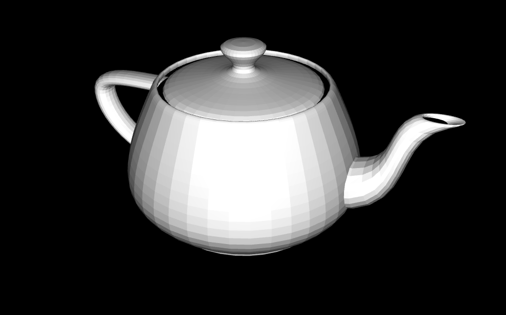

Open Source
DQN

Deep Q-learning library, with Double DQN, Dueling DQN, and Lazy Frame Stacking. And an example project using the library to train CNN on Flappy Bird game.
Source Library Source ExamplePyTorch
Reinforcement learning
Gymnasium
CNN
Open Source
3D model viewer

3D models parsing, and rendering in browser.
Source Try onlineRust
WebGL 2
.obj